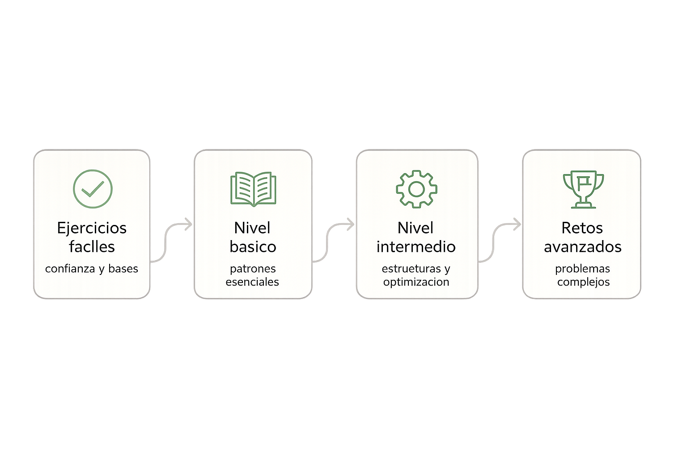

La mejor forma de aprender algoritmia es resolviéndola. Esta sección ofrece ejercicios progresivos:
empieza por los básicos aunque te parezcan sencillos; la claridad conceptual que obtendrás es
el fundamento para resolver los más difíciles.

Nivel fácil
Ejercicios básicos (1 – 5)
Estos ejercicios caben en menos de 20 líneas de código. Su objetivo no es ser difíciles, sino
construir el hábito de pensar antes de programar y verificar los casos borde.
Ejercicio 01
ArraysBucles
Suma y promedio de un arreglo
Objetivo: Dado un arreglo de n enteros leídos desde stdin, imprime su suma y su promedio (como decimal).
Concepto practicado: Lectura de arreglos, bucle for, tipos int vs double.
Recuerda hacer el cast antes de dividir: (double)suma / n. Si divides dos enteros obtendrás un entero.
Ejercicio 02
StringsCondicionales
¿Es palíndromo?
Objetivo: Lee una cadena de texto y determina si es palíndromo (se lee igual al derecho y al revés). Ignora mayúsculas/minúsculas.
Concepto practicado: Recorrido de cadenas, índices desde ambos extremos, tolower().
Usa dos índices: i = 0 e j = s.size()-1. Avanza ambos hacia el centro mientras s[i] == s[j]. Si se cruzan sin diferencias, es palíndromo.
Ejercicio 03
MatemáticasBucles
Números primos hasta N
Objetivo: Imprime todos los números primos menores o iguales a N usando la Criba de Eratóstenes.
Concepto practicado: Algoritmos con arreglos booleanos, cribas, eficiencia básica.
Declara bool primo[N+1] inicializado en true. Por cada número p primo (no marcado como falso), marca sus múltiplos desde p² hasta N como false.
Ejercicio 04
RecursiónFunciones
Fibonacci iterativo vs recursivo
Objetivo: Implementa una función Fibonacci recursiva y otra iterativa. Para n = 40, mide (informalmente) cuál es más rápida y razona el porqué.
Concepto practicado: Recursión, árbol de llamadas, introducción a memoización.
La versión recursiva naive recalcula los mismos valores muchas veces: fib(5) llama a fib(4) y fib(3), y fib(4) vuelve a llamar a fib(3). Eso es exponencial. La iterativa es O(n).
Ejercicio 05
ArraysBúsqueda
Elemento mayoritario
Objetivo: Dado un arreglo de n enteros, determina si existe un elemento que aparece más de n/2 veces (elemento mayoritario). Si existe, imprímelo; si no, imprime "Ninguno".
Concepto practicado: Frecuencias, uso de map o arreglo auxiliar.
Solución simple: usa un unordered_map<int,int> para contar frecuencias en O(n). Luego recorre el mapa buscando el elemento con frecuencia mayor a n/2.
Nivel intermedio
Ejercicios intermedios (6 – 10)
Estos ejercicios requieren combinar más de una idea o estructura. Tómate el tiempo necesario:
si te atascas, regresa a la guía o consulta las pistas.
Ejercicio 06
Búsqueda binariaArrays
Búsqueda binaria en arreglo ordenado
Objetivo: Implementa búsqueda binaria sin usar std::binary_search. El programa debe leer un arreglo ordenado de n enteros y responder q consultas: para cada consulta indica si el número existe y en qué índice.
Concepto practicado: Búsqueda binaria, índices izq / der / mid.
Calcula el punto medio como mid = izq + (der - izq) / 2 para evitar overflow. Si arr[mid] == objetivo, retorna mid. Si arr[mid] < objetivo, mueve izq = mid + 1. Si no, mueve der = mid - 1.
Ejercicio 07
OrdenamientoDivide y vencerás
Implementar Merge Sort
Objetivo: Implementa Merge Sort desde cero en C++ y ordena un arreglo de n enteros. Verifica que el resultado sea correcto comparándolo con std::sort.
Concepto practicado: Recursión, divide y vencerás, complejidad O(n log n).
Divide el arreglo en dos mitades con índice mid = (izq + der) / 2. Llama recursivamente a mergeSort para ambas mitades. Luego fusiona: usa dos índices para recorrer ambas mitades y copia el menor a un arreglo temporal.
Ejercicio 08
StackCadenas
Paréntesis balanceados
Objetivo: Dado un string con (, ), [, ], {, }, determina si los paréntesis están correctamente balanceados y anidados.
Concepto practicado: Pilas (std::stack), recorrido de cadenas.
Usa una stack<char>. Al encontrar un paréntesis de apertura, apílalo. Al encontrar uno de cierre, verifica que el tope de la pila sea el correspondiente de apertura; si no, no está balanceado. Al final, la pila debe estar vacía.
Ejercicio 09
GrafosBFS
Laberinto: camino más corto
Objetivo: Dado un laberinto como una grilla de 0s (libre) y 1s (muro), encuentra la longitud del camino más corto desde la celda inicial (0,0) hasta la celda destino (n-1, m-1). Si no existe camino, imprime -1.
Concepto practicado: BFS en grillas, queue, arreglo de visitados.
Usa BFS con una queue<pair<int,int>>. Empieza por (0,0) con distancia 0. Por cada celda, explora las 4 vecinas (arriba, abajo, izquierda, derecha) que sean 0 y no visitadas. Cuando llegas a (n-1, m-1), la distancia actual es la respuesta.
Ejercicio 10
HashFrecuencias
Dos sumas (Two Sum)
Objetivo: Dado un arreglo de n enteros y un valor objetivo T, encuentra dos índices i, j (i ≠ j) tales que arr[i] + arr[j] == T. Si no existen, indica que no hay solución. Implementa la solución en O(n).
Concepto practicado:unordered_map, complemento: T - arr[i].
Recorre el arreglo. Por cada elemento arr[i], calcula su complemento c = T - arr[i]. Busca c en un unordered_map que mapea valor → índice. Si está, encontraste la pareja. Si no, inserta arr[i] → i en el mapa y continúa.
Desafío
Retos finales (nivel avanzado)
Estos tres retos combinan múltiples conceptos. No tienen solución trivial: necesitan diseño
cuidadoso, elección de estructuras y análisis de complejidad. Tómate tu tiempo.
Reto A
GrafosDFSTopología
Ordenamiento topológico con detección de ciclos
Objetivo: Dado un grafo dirigido de n nodos y m aristas (representando dependencias entre tareas), determina un orden de ejecución válido (topológico). Si el grafo tiene un ciclo, indica que no es posible.
Restricciones: n ≤ 10⁵, m ≤ 2×10⁵. Solución esperada: O(n + m).
Estructura sugerida: Lista de adyacencia (vector<vector<int>>), DFS con tres estados: no visitado, en proceso, terminado.
Usa DFS. Mantén tres estados: 0 = no visitado, 1 = en la pila actual, 2 = terminado. Si en el DFS llegas a un nodo con estado 1, hay un ciclo. Los nodos se agregan a la lista topológica en orden de finalización del DFS, luego se invierte el resultado.
Reto B
DPProgramación dinámica
Subsecuencia común más larga (LCS)
Objetivo: Dadas dos cadenas s1 y s2, encuentra la longitud de su subsecuencia común más larga (LCS: Longest Common Subsequence). Una subsecuencia no necesita ser contigua.
Restricciones: |s1|, |s2| ≤ 1000. Solución esperada: O(|s1| × |s2|) en tiempo y espacio.
Estructura sugerida: Tabla 2D de programación dinámica dp[i][j] = LCS de los primeros i caracteres de s1 y j de s2.
Define dp[i][j] como la LCS de s1[0..i-1] y s2[0..j-1].
Si s1[i-1] == s2[j-1]: dp[i][j] = dp[i-1][j-1] + 1.
Si no: dp[i][j] = max(dp[i-1][j], dp[i][j-1]).
Caso base: dp[i][0] = dp[0][j] = 0.
Reto C
GrafosDijkstraPriority Queue
Camino más corto con pesos (Dijkstra)
Objetivo: Dado un grafo dirigido ponderado (con pesos ≥ 0), encuentra las distancias mínimas desde un nodo fuente S hacia todos los demás nodos. Imprime "INF" si un nodo no es alcanzable.
Restricciones: n ≤ 10⁵, m ≤ 2×10⁵, pesos ≤ 10⁹. Solución esperada: O((n + m) log n).
Estructura sugerida: Lista de adyacencia, priority_queue<pair<long long, int>, vector<pair<long long,int>>, greater<>> (min-heap).
Inicializa dist[S] = 0 y dist[i] = INF para el resto. Usa un min-heap con pares (distancia, nodo). En cada iteración, extrae el nodo con menor distancia actual y relaja sus vecinos: si dist[u] + w(u,v) < dist[v], actualiza y agrega al heap.
💡 Recursos para practicar más
Una vez resueltos estos ejercicios, practica en plataformas de jueces en línea como Codeforces,
AtCoder, LeetCode o CSES Problem Set. Empieza por los problemas de nivel A y B antes de los C
y superiores.
¿Preguntas?
Contacto
Si tienes dudas sobre el contenido, encontraste un error, o simplemente quieres dejar un
comentario, usa este formulario.
📝 Nota
Formulario demostrativo: no envía datos. Los campos tienen validación en JavaScript y sirven
para ilustrar buenas prácticas de formularios web accesibles.